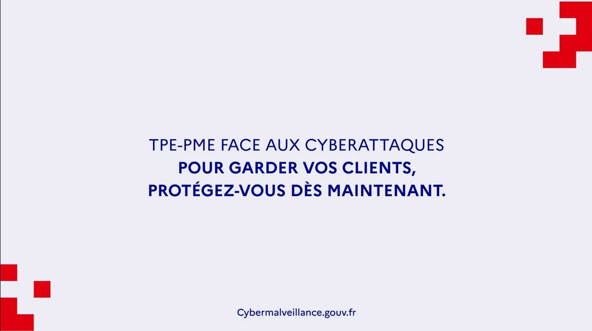

Cybermalveillance.gouv.fr
06/10/2025
Baromètre national de la maturité cyber des TPE-PME.
En savoir plus
_______________________________________________________________________________________________________________________________________________________________________________________________________________________________________
Le thème que j’ai choisi pour cette veille technologique est le hacking, avec comme problématique principale :
Ce sujet m’intéresse particulièrement car, dans le domaine de l’informatique, on parle très souvent de cybersécurité, de règles à respecter et de bonnes pratiques, sans toujours chercher à comprendre la nature réelle des menaces. Or, pour se défendre efficacement, il est essentiel de savoir comment les attaques sont menées, quels outils sont utilisés et quelles sont les méthodes privilégiées par les attaquants. Cette veille a donc pour objectif de mieux comprendre le fonctionnement du hacking moderne afin d’en tirer des enseignements concrets en matière de sécurité.
Le hacking regroupe l’ensemble des techniques visant à analyser, contourner ou exploiter les failles d’un système informatique, qu’il s’agisse d’un réseau, d’un serveur ou d’une application. Contrairement à l’image négative souvent véhiculée, le hacking n’est pas systématiquement illégal. On distingue notamment le hacking malveillant, utilisé à des fins criminelles, et le hacking éthique, pratiqué dans un cadre légal pour renforcer la sécurité des systèmes.
Les hackers dits black hats exploitent les failles pour voler des données, perturber des services ou obtenir un gain financier. À l’inverse, les white hats travaillent généralement pour des entreprises ou des organisations afin de tester leurs systèmes et corriger les vulnérabilités. Entre les deux, les grey hats adoptent des pratiques plus ambiguës, parfois sans autorisation, mais sans intention clairement malveillante.
Les outils de hacking interviennent à différentes étapes d’une attaque. Afin de rendre leur fonctionnement plus clair, il est pertinent de les regrouper par usage, tout en conservant une explication détaillée de leur rôle.
Avant toute tentative d’intrusion, les hackers réalisent une phase de reconnaissance. Celle-ci consiste à collecter des informations sur la cible afin d’identifier des points d’entrée potentiels. Des outils comme Nmap sont utilisés pour analyser les ports ouverts, les services actifs et parfois même le système d’exploitation d’une machine. Whois permet d’obtenir des informations liées aux noms de domaine, tandis que Maltego aide à visualiser les relations entre domaines, adresses IP et organisations.
Cette phase est essentielle, car elle conditionne la suite de l’attaque. Plus les informations récoltées sont précises, plus l’attaque a de chances d’aboutir.
Une fois la reconnaissance terminée, les hackers cherchent à exploiter les vulnérabilités découvertes. Pour cela, ils s’appuient sur des frameworks et des scanners spécialisés. Metasploit est largement utilisé pour tester et exploiter des failles connues dans des systèmes ou des applications. Des outils comme Nessus ou OpenVAS permettent quant à eux de détecter automatiquement les vulnérabilités présentes sur une infrastructure.
Ces outils sont également employés par les professionnels de la cybersécurité afin d’anticiper les attaques et corriger les failles avant qu’elles ne soient exploitées.
Les applications web constituent des cibles privilégiées, car elles sont accessibles publiquement et souvent complexes. Burp Suite et OWASP ZAP permettent d’analyser les échanges entre un navigateur et un serveur web afin de repérer des failles telles que les injections SQL ou les attaques XSS. SQLmap automatise l’exploitation des vulnérabilités liées aux bases de données, ce qui le rend particulièrement efficace.
Cette catégorie d’outils met en évidence l’importance de sécuriser les applications dès leur conception.
Les mots de passe faibles ou réutilisés représentent une faille majeure. Des outils comme Hydra permettent de lancer des attaques par force brute sur différents protocoles, tandis que John the Ripper et Hashcat sont utilisés pour casser des mots de passe à partir de hash. Leur efficacité montre les limites des mots de passe simples et l’intérêt de solutions comme l’authentification multifacteur.
Enfin, certains outils sont spécifiquement conçus pour analyser ou intercepter le trafic réseau. Wireshark permet d’observer en détail les paquets échangés sur un réseau. Ettercap est souvent utilisé pour des attaques de type Man-in-the-Middle, tandis que Aircrack-ng cible la sécurité des réseaux Wi‑Fi.
Ces outils sont couramment utilisés lors d’audits de sécurité, mais peuvent également être détournés à des fins malveillantes.
Les outils de hacking évoluent constamment pour s’adapter aux nouvelles technologies. On observe aujourd’hui une automatisation croissante des attaques, parfois assistée par l’intelligence artificielle. De plus, les attaques sont de plus en plus ciblées et discrètes, notamment dans le cadre des menaces persistantes avancées (APT). Par ailleurs, la facilité d’accès à certains outils a contribué à l’émergence de hackers peu expérimentés, capables de lancer des attaques sans avoir de connaissances techniques approfondies.
Le hacking moderne repose sur une large gamme d’outils, chacun intervenant à une étape précise d’une attaque. Comprendre ces outils permet de mieux appréhender les menaces actuelles et de renforcer la sécurité des systèmes informatiques. Cette veille technologique montre que la cybersécurité ne se limite pas à l’application de règles, mais qu’elle nécessite une compréhension approfondie des techniques utilisées par les attaquants. Dans un contexte où les cyberattaques sont de plus en plus fréquentes, cette connaissance représente un enjeu majeur pour les entreprises et les professionnels de l’informatique.
Sources :
OWASP (Open Web Application Security Project)
ANSSI – Agence nationale de la sécurité des systèmes d’information
Documentation officielle Metasploit
____________________________________________________________________________________________________________________________________________________________________________________
Actualité Cyber
06/10/2025
Baromètre national de la maturité cyber des TPE-PME.
En savoir plus
____________________________________________________________________________________________________________________________________________________________________________________
Je me tiens informé sur l'actualité concernant les cyberattaques, à travers mon compte Feedly ainsi que le site CERT-FR, que vous pouvez consulter en cliquant dessus. Le CERT-FR est un centre gouvernemental chargé de la cyberveille, des alertes et des réponses face aux cyberattaques. C'est donc un choix pertinant si l'on souhaite rester à jour des différents qui ont lieux.
Je suis également plusieurs YouTube spécialisés. Voici quelques chaînes que je recommande pour rester à jour :